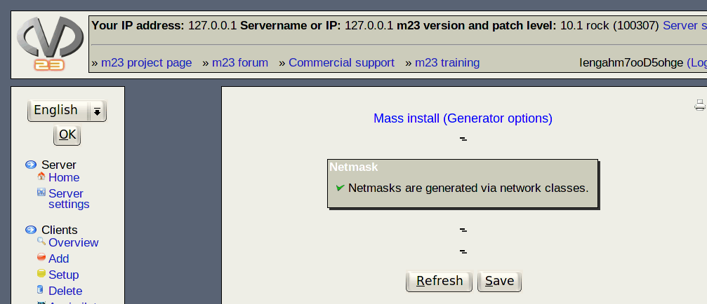

Here you can enter the values for the generators:
- Client name: Enter the client base name and a start number. The necessary number of client names is generated after the scheme client base nameconsecutive number. Client names already used by m23 are skipped. E.g. client base name=m23client, start number=12 generates the client names m23client12, m23client13, ...
- Login: This is the name that is used by the user to login into the client. There are two possibilities to create login names. The incremental variant works as the method at "Client name". It is possible too to generate logins from the first character of the forename and the whole familyname ("Generate from fore- and familyname").
- First name: The generation of the forenames (which are the login names, too) is analogical.
- IP Address: Specify the ranges for IP addresses that should be searched for free IPs. You can activate an extra option to ping IP addresses and an IP is only used if there is no answer to the ping request. The generated IPs can be constricted by the choice of the ranges.
- Netmask: The netmasks are generated by the defined network classes:
| From |
To |
Netmask |
| 0.0.0.0 |
127.255.255.255 |
255.0.0.0 |
| 128.000.000.000 |
191.255.255.255 |
255.255.0.0 |
| 192.000.000.000 |
255.255.255.255 |
255.255.255.0 |
- First login: These passwords can be generated at random ("Random passwords") or random and easily memorisable for humans ("PwGen passwords"). The length of the generated passwords can be changed. It is recommended to keep the length of 8 characters.
- User ID: Enter the start number for the user IDs. Free IDs after this number will be used.
- Group ID: Enter the start number for the group IDs. Free IDs after this number will be used.
dodger
2012-11-22